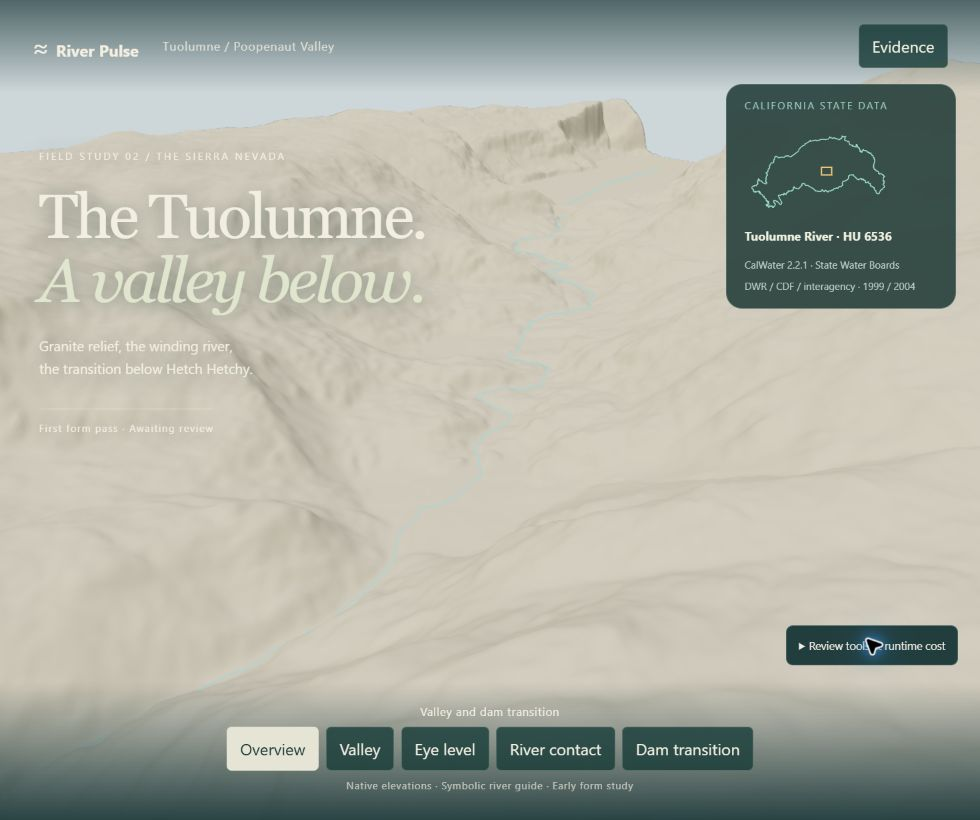
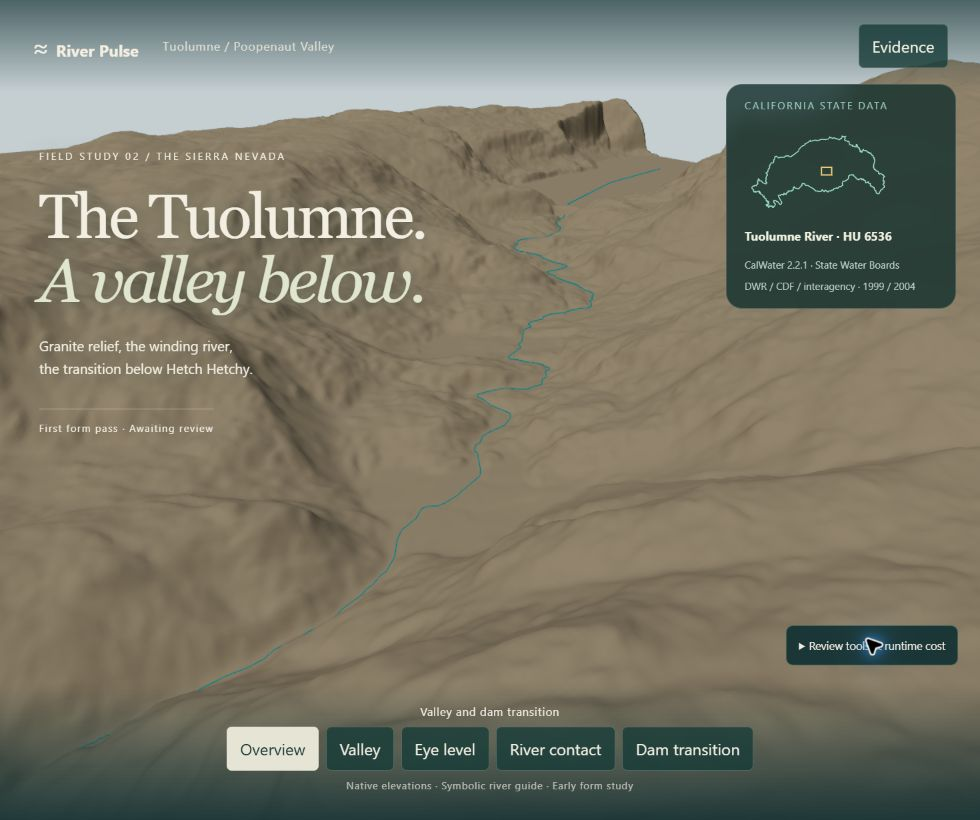
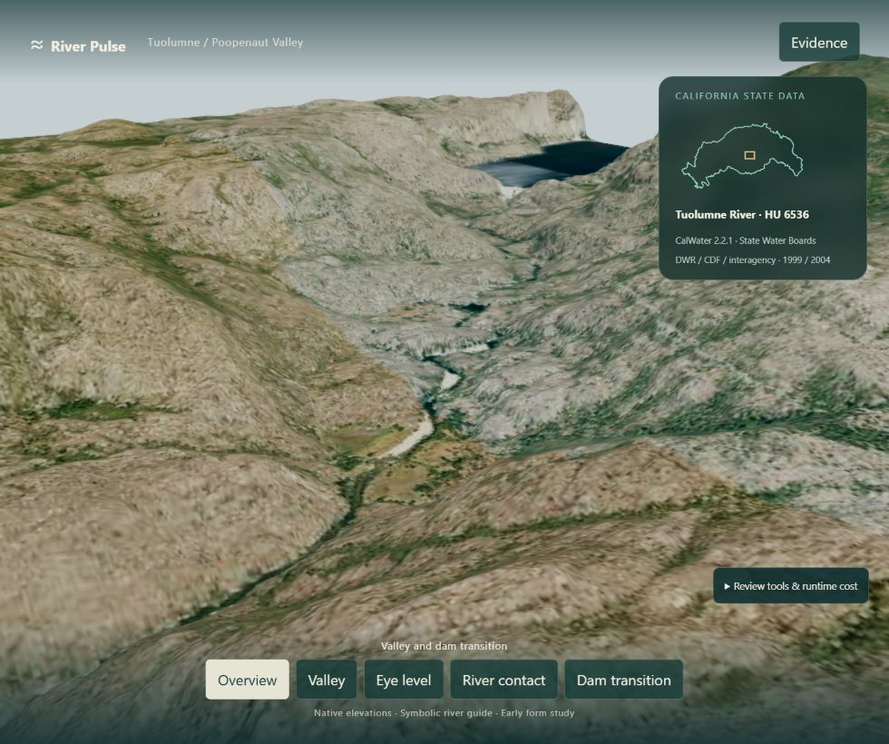
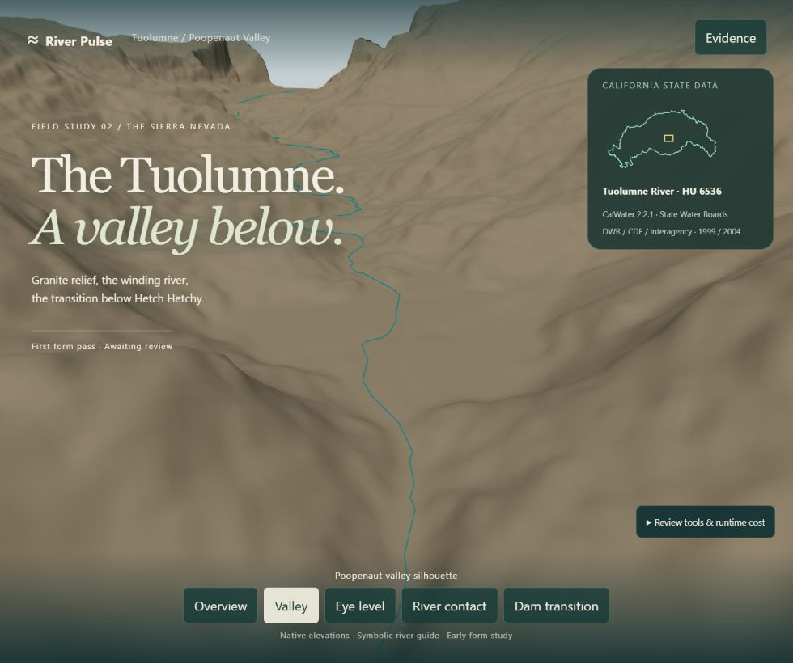
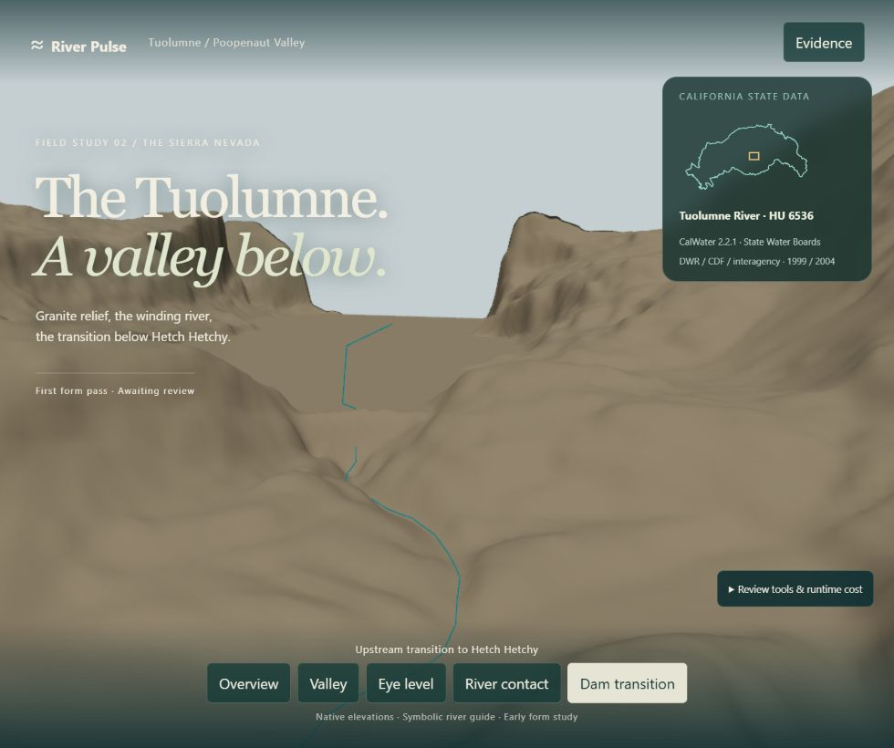
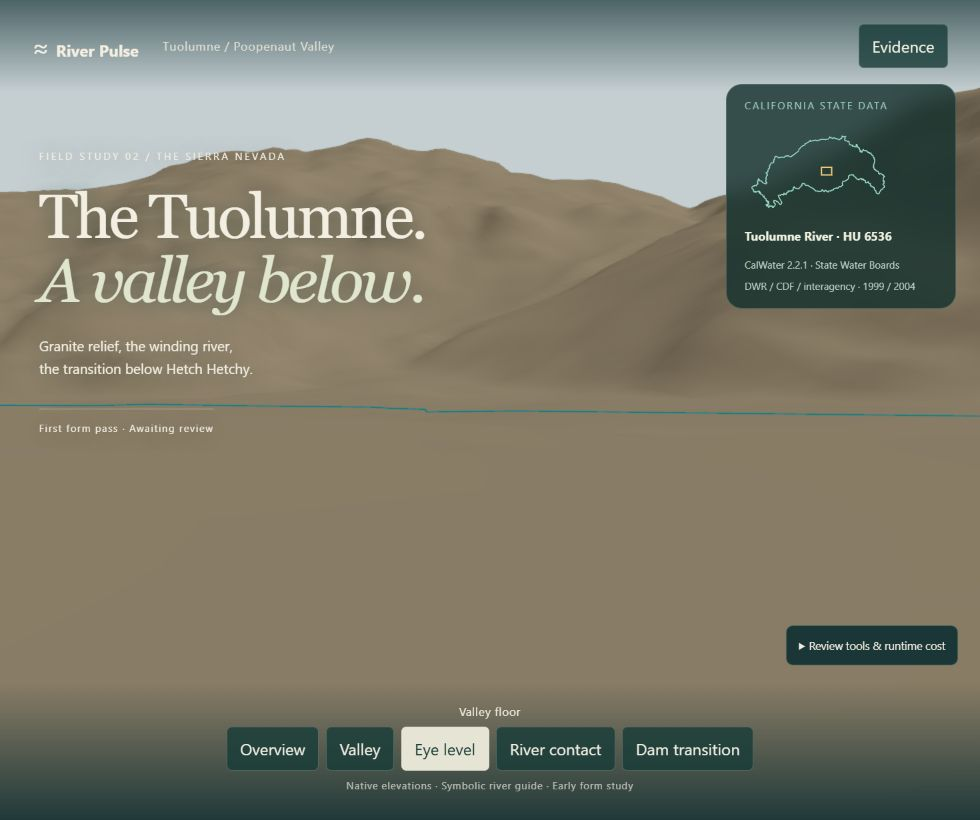
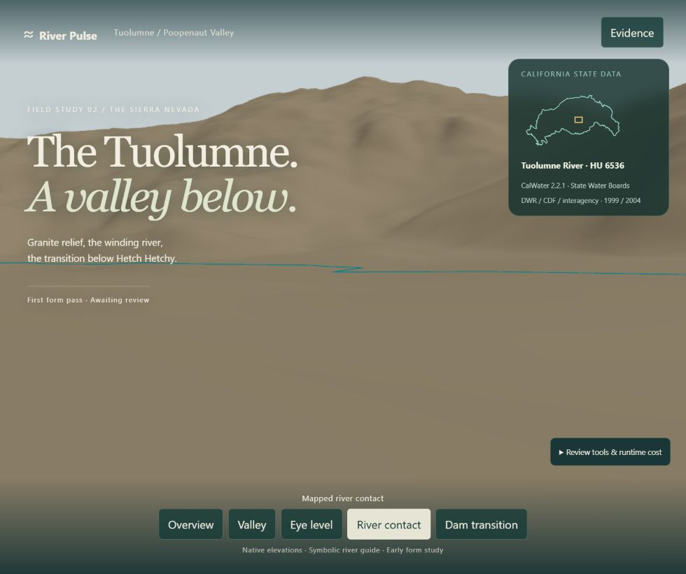
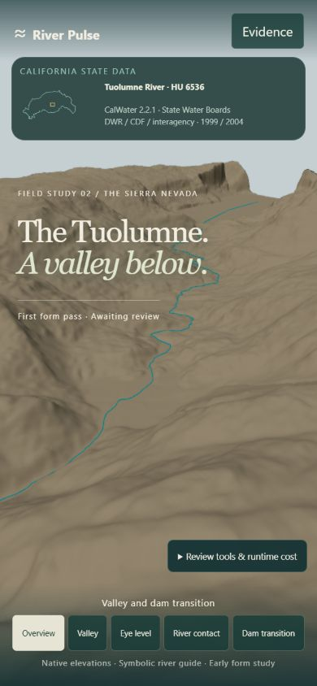
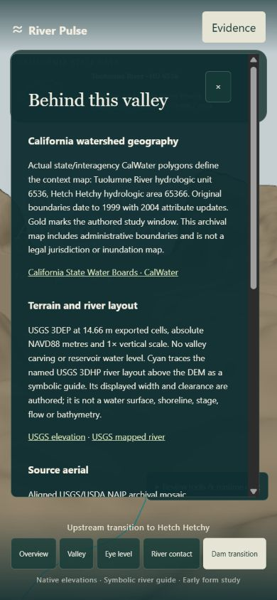

Archived RP21 form baseline. The later RP22 dam reuse review adds the existing Hetch Hetchy structure; images below preserve the earlier state.
Actual local browser renders. Early plain-form baseline, awaiting human review. Open live study
Camera calibration found that the initial proposals faced a ridge rather than the mapped river. Overview was corrected, then frozen for the paired form-contrast pass below. These lighting images use identical overview coordinates, 980×820, WebGPU and DPR 1.25. Initial calibration images are not same-camera geometry comparisons.









Cost: 788,995 rendered triangles, three draw calls with guide visible, 21.11 MiB CPU geometry buffers; source texture RGBA+mips estimate 8.0 MiB. The contrast correction changes no geometry or draw calls. GPU memory/time and normal foreground FPS remain unmeasured. Native 1 m lidar is available as a research lead, not installed.